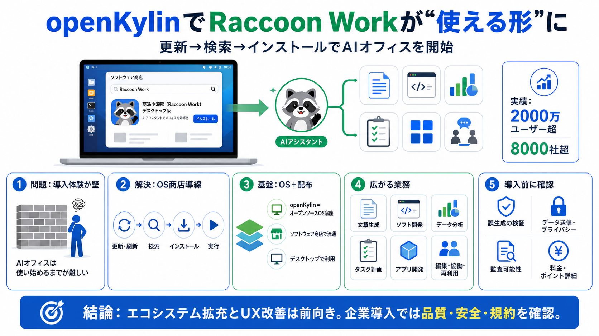

0day同步！商汤小浣熊Linux 版首发支持openKylin - OSCHINA - 开源× AI
打开openKylin软件商店,点击右上角“更新"按钮,并在弹出的窗口中点击“刷新页面”; 在软件商店中搜索并安装“商汤小浣熊”,即可直接运行。

openKylinのソフトウェア商店で、商汤小浣熊（Raccoon Work）のデスクトップ版が“更新→検索→インストール”で使えるようになりました。
AIオフィスは“使い始めるまで”が壁になりやすい一方、OS側のエコシステム設計がユーザー獲得と普及を左右します。
openKylinは「Linux系オープンソースOS底座」として位置づけられ、サードパーティのアプリ実装・流通が価値の中心です。
openKylinは商汤小浣熊のデスクトップ端末向け新バージョンを適応し、AIオフィス実アプリの対応先として強調しました。
openKylinのソフトウェア商店で更新・刷新した後、「商汤小浣熊」を検索しインストールすれば、そのまま実行できる流れが示されています。
商汤小浣熊は、文章生成やチャットだけでなく、ソフト開発・データ分析・タスク計画・アプリ開発などの“仕事の流れ”に踏み込むとされています。
記事では「2000万ユーザー超」「8000社以上で導入」といった実績が言及され、企業の業務効率化や“数智化”の文脈で価値が説明されています。
同アップデートでは会員体系とポイント機構が全面アップグレードされ、利用頻度やタスクの複雑度に合わせた柔軟なプランを狙うとしています。
記事は成果を強調しますが、誤生成・情報漏えい・監査可能性などの具体的な安全設計や検証手順は記載が限定的です。
今回の適応は、openKylinのエコシステム拡充とユーザー体験改善を示す前向きな動きですが、企業導入では利用規約・データ取り扱い・検証フローも必ず確認すべきです。
打开openKylin软件商店,点击右上角“更新"按钮,并在弹出的窗口中点击“刷新页面”; 在软件商店中搜索并安装“商汤小浣熊”,即可直接运行。
在实际应用中，可实现： •数据分析场景精度领先，客户实测精度 >95% •时序计算、数据匹配、数理计算、异常检测垂直专业任务精度达到 100% 点击免费体验：商汤智能办公助手—办公小浣熊Raccoon 产品功能 …
< Previous > Next openKylin 开放麒麟社区官网 | 开源聚力，共创未来 ## News openKylin 3.0 Beta version released, public beta…
跳至導覽 跳過主要內容 跳至右欄 [...] <匯港通訊> 商湯(00020)宣布，旗下AI智能辦公助手「辦公小浣熊」，正式接入在全球科技圈掀起熱潮的智能體平台 OpenClaw，並與合作夥伴趨境科技共同推出 AI Box 一體化方案，…
: AI语音开放平台 SenseAudio 提供自然、动听、富有情绪的AI语音服务 : 如影 SenseAvatar 数字人生成 : 商汤输入法 AudioClaw 智能语音输入法 …